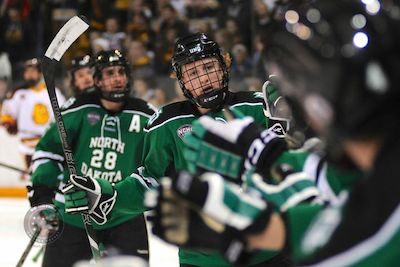
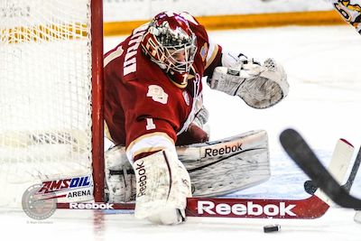
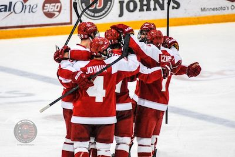
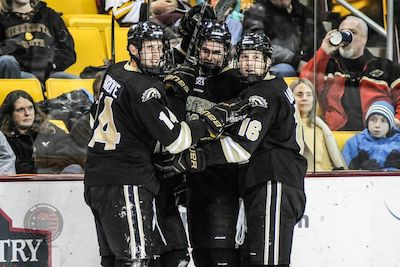
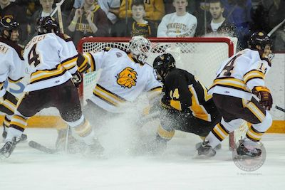
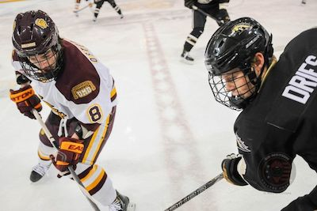

Hockey News
North Dakota Heating Up
They may not have a nickname, but they do have a strong history of playing damn good hockey towards the end of the season.
Under head coach Dave Hakstol, North Dakota is 100-69-17 before the Holidays and 153-58-23 after the Holidays in the last five years, including this year. Last year was the lonely year among the last five in which UND was unable to find the bounce they needed to surpass their first-half record, although they still managed to win 61% of their games.
UND has found it's way into the NCAA tournament for the last 11 years in a row, and 16 of their last 17 seasons. Even with all their success in getting to the big tournament, it's been over 10 years since North Dakota has been crowned the king in college hockey.
That being said, Hakstol has yet to win a national championship, but does that make him a sub-par coach?
Behind the bench for the green and black team, Hakstol has sketched a 2nd place and four 3rd place entrees on his resume, which is rather impressive given he's never missed the tournament.
- via SBN College Hockey
Pioneers Take Game 3
The visiting Pioneers upset the Mavericks in an exciting 2-0 victory in game three of the NCHC quarterfinal series.
A two-goal third period in combination with perfect outing from netminder Sam Brittain was just what the Denver Pioneers needed to shut out the Nebraska Omaha Mavericks 2-0 in NCHC quarterfinals at the CenturyLink Center in Omaha, Nebraska.
In front of an attendance of 3,862, the Pioneers and Mavericks battled for two periods without either team finding a way onto the scoreboard.
Fortunately for the Pioneers, they were able to get one helluva pep talk between the second and third periods because they came on flying.
At 6:16 into the third period, Ty Loney finally broke the stalemate and gave the visiting Pioneers the 1-0 lead. Assists were awarded to Daniel Doremus and Josiah Didier on Loney's goal.
Head coach Dean Blais was then forced to pull UNO's Ryan Massa from his net in order to break the wall Brittain had put up, but DU's Zac Larraza added an empty-net insurance goal to give the Pioneers a 2-0 lead that would hold until the final horn sounded.
- via SBN College Hockey
Miami Soars Over Huskies
A last second goal gave the Redhawks an opportunity to keep their season going.
With three seconds left to play in regulation, Miami's Justin Greenberg helped the Redhawks avoid overtime by defeating St. Cloud State 4-3 in NCHC quarterfinal play at the Herb Brooks National Hockey Center in St. Cloud Minnesota.
After a scoreless first period, Kevin Gravel finally netted a goal to break the stalemate, followed by a tally from Jimmy Murray to allow the Huskies to head into the last intermission with a solid two-goal lead over the visiting Miami Redhawks.
Miami's Sean Kuraly cut St. Cloud State's lead in half under four minutes into the 3rd period, followed by a game-tying goal by Austin Czarnik at 7:42 from Blake Coleman and Cody Murphy.
The Huskies regained the lead just under two minutes later off a Nic Dowd powerplay tally, but Miami would respond again. Anthony Louis buried a powerplay goal as well to tie the game again, 3-3, making for an exciting ending.
Miami's Anthony Louis storms into Husky territory with puck, finding Greenberg flying down to his left. Greenberg took a quick shot, and with three seconds remaining, extended Miami University's season.
- via SBN College Hockey
Broncos Down Dogs, 4-3
Despite being outshot 37-11, the Broncos down the Bulldogs to earn the weekend sweep and a ticket to the NCHC's Frozen Faceoff.
Western Michigan's Frank Slubowski was tested throughout the game, but stood strong between the posts in the 4-3 triumph over Minnesota Duluth at Amsoil Arena in Duluth, Minnesota.
The Bulldogs' Tony Cameranesi and Adam Krause gave UMD a 2-0 lead late in the 1st period, but Bronco Shane Berschbach would tally a goal of his own on the man-advantage before the first period would expire.
Chase Balisy, who finished the game with an impressive 4 points, tied the game 2-2 early in the second period for the Broncos, scoring on WMU's second shot of the game. Minutes later, Bulldog captain Joe Basaraba would find a hole in Slubowski's net to regain the lead before heading into the locker room for the final period of play, 3-2.
The Bulldogs were 13-0-3 entering the 3rd period with a lead, while the Broncos were just 2-12-2, but that didn't seem to phase Western Michigan. Goals by Justin Kovacs and Kenney Morrison allowed Western Michigan to sweep the quarterfinal series away from home, picking up a ticket to the Target Center for the NCHC Frozen Faceoff as well.
- via SBN College Hockey
UMD Routs CC in 5-Point Weekend
It wasn't a walk through the park, but the Minnesota Duluth Bulldogs finished their home series against Colorado College with a 2-1 victory on Saturday.
It was a five-point weekend for the Minnesota Duluth Bulldogs, who beat the Colorado College Tigers in an overtime shootout on Friday after an official 2-2 NCAA tie, followed by a 2-1 finish On Saturday night at Amsoil Arena in Duluth, Minnesota.
On Friday night, Colorado College fought harder than a team with three wins on the season, taking the Bulldogs into overtime behind the glove of netminder Josh Thorimbert.
Thorimbert made an unbelievable 50 saves throughout the game, including a 22-save second period after the Bulldogs found themselves hungry after a scoreless first period.
Alex Krushelnyski lit the lamp in the first period to give Colorado College the 1-0 lead. At that point the Bulldogs were 1-5-1 when trailing an opponent after the first period, and while the Tigers have yet to win a game on the road, they exhibited a level of talent that should not display a record that includes only three wins.
UMD responded with two goals in the second period by Andy Welinski (Anaheim Ducks) and Caleb Herbert (Washington Capitals) to give the Bulldogs the advantage heading into the locker room before the third period.
Archie Skalbeck scored in the third period to tie the Bulldogs at twos, pushing the game into overtime. A scoreless and short OT ended the game in an official 2-2 tie, but per NCHC policy, a shootout for the extra point was started.
Of the six skaters to shoot, only Herbert found the back of the net, giving the Bulldogs the shootout victory. Aaron Crandall responded by doing "The Bernie" at UMD's Penalty Box Student Section as a celebration.
- via SBN College Hockey
Bulldogs Triumph Over Foe
Minnesota Duluth ends Western Michigan's 6-game unbeaten streak with a loss a Lawson Arena.
The University of Minnesota Duluth triumphed over Western Michigan University on Friday night at Lawson Arena in Kalamazoo, Michigan.
Kyle Osterberg put the Bulldogs on the board first from Caleb Herbert (Washington Capitals) and Justin Crandall during a UMD man-advantage, but Sheldon Dries buried a shorthanded goal during the same five minute major penalty just over a minute later.
During the second period, Minnesota Duluth tallied a goal from Tony Cameranesi (Toronto Maple Leafs) and Western Michigan matched with a power play notch from Kenney Morrison and assists from Colton Hargrove (Boston Bruins) and Justin Kovacs. The second period would end just like the first, in a tie.
The third period was a different story, though, as the Bulldogs found three goals all while Aaron Crandall held strong between the posts.
The loss ended an impressive 6-game win streak that coach Andy Murray had his Broncos riding, including a GLI championship win over Michigan Tech. The last team to defeat the Broncos was the Bulldogs back at Amsoil Arena before the midseason break.
- via SBN College Hockey